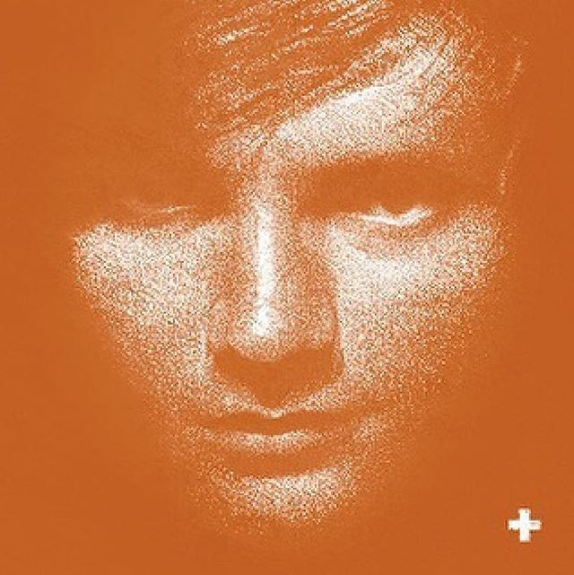
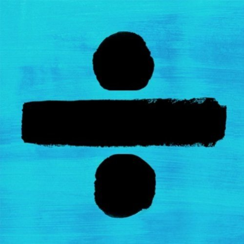

+ is the debut studio album by Ed Sheeran that was released on September 9, 2011. This album was his huge success as
"The A Team" and "You Need Me, I Don't Need You" peaked at No. 3 and No. 4 on the UK Singles Chart respectively.Later,
"Lego House" was released on 11 November 2011 as the album's third single was peaking at No. 5 in the UK.
Three additional singles—"Drunk", "Small Bump", and "Give Me Love" were released throughout the year, all charting within the top 25 of the UK Singles Chart.

x is the second studio album by Ed and was released on 20 June 2014. It was an international commercial success, peaking at No. 1 in fifteen countries.
"Sing", "Don't", "Thinking Out Loud", "Bloodstream", and "Photograph" were the five singles that were released from the album and all of them peaked at the top 10
in international music charts. To watch Ed perform, go to
videos

÷ is the third studio album by Ed and was released on 3 March 2017.The album debuted at number one in the United Kingdom, selling 672,000 units in its first week,
making it the fastest-selling album by a male artist there. "Castle on the Hill", "Shape of You" and "Perfect" were released as the album's lead singles and all of these
were on the top 10 in UK Singles Chart. His 2017 world tour is a huge success and he has also released dates for 2018 North American Stadium tours.